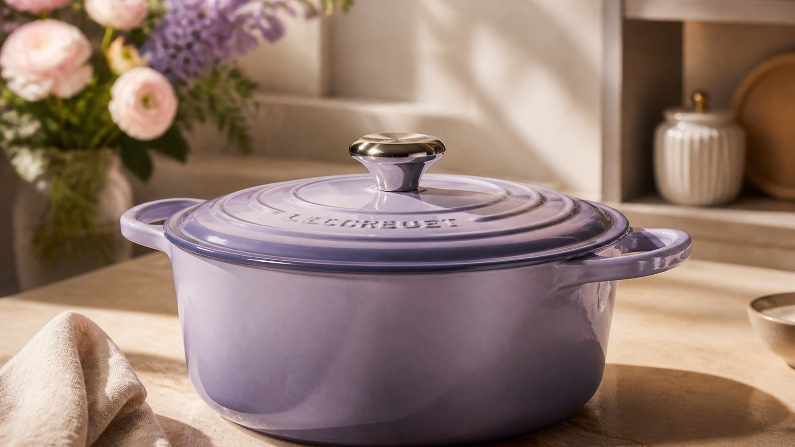
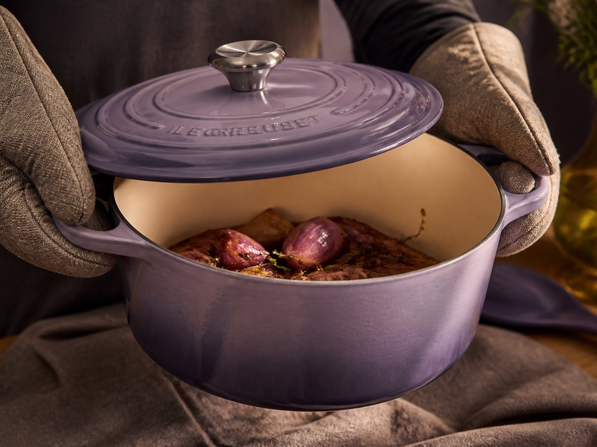
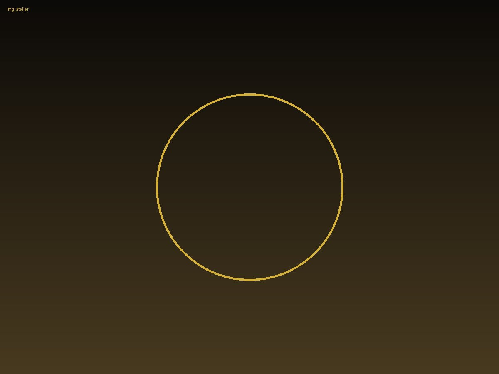
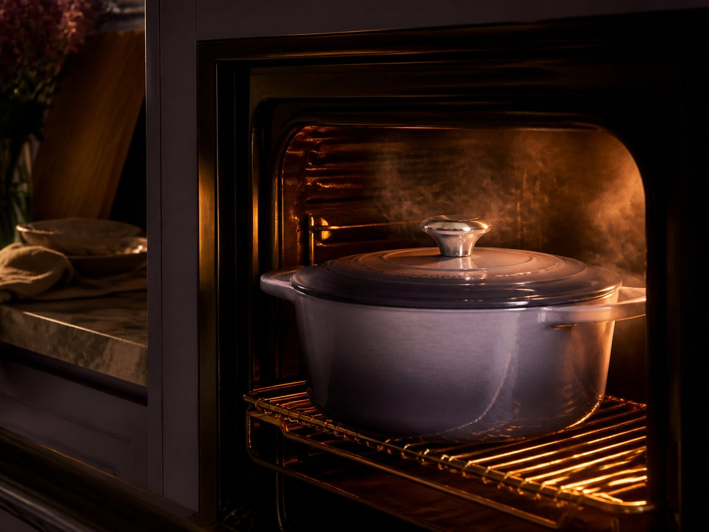
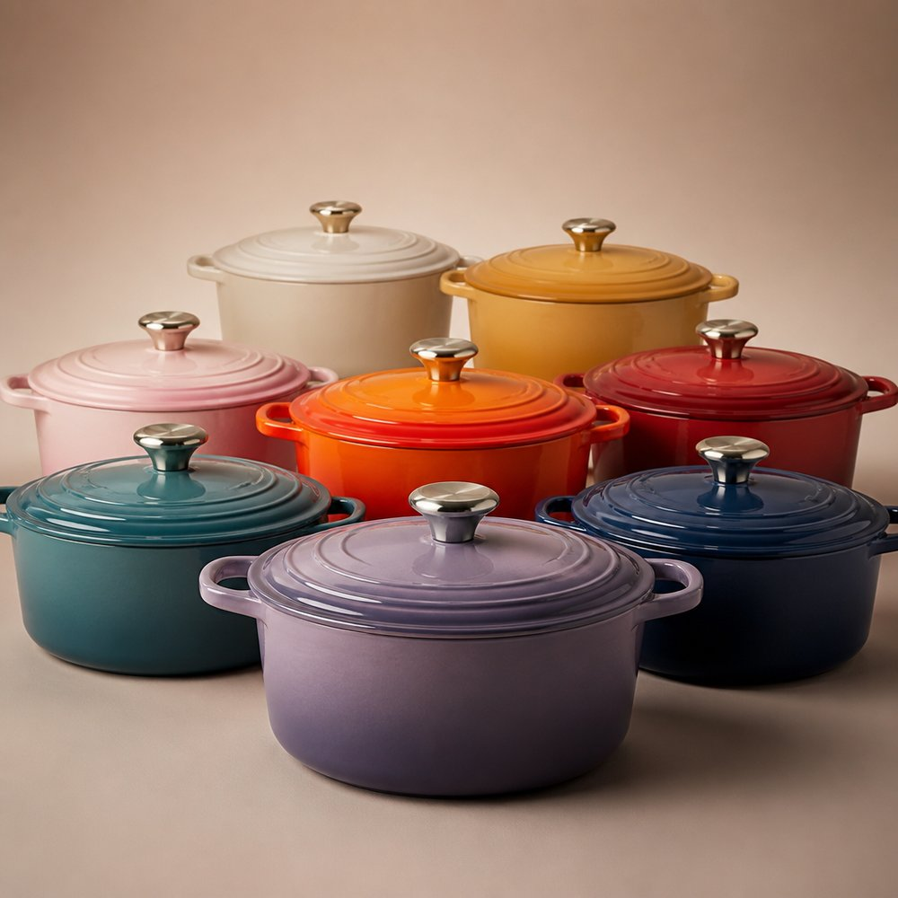
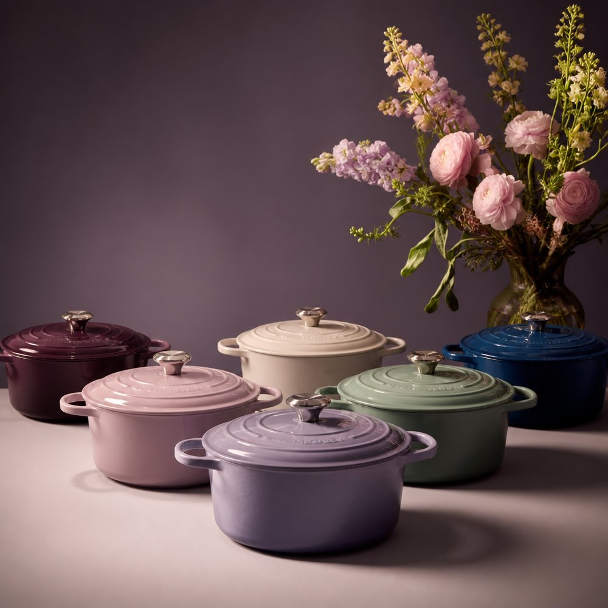
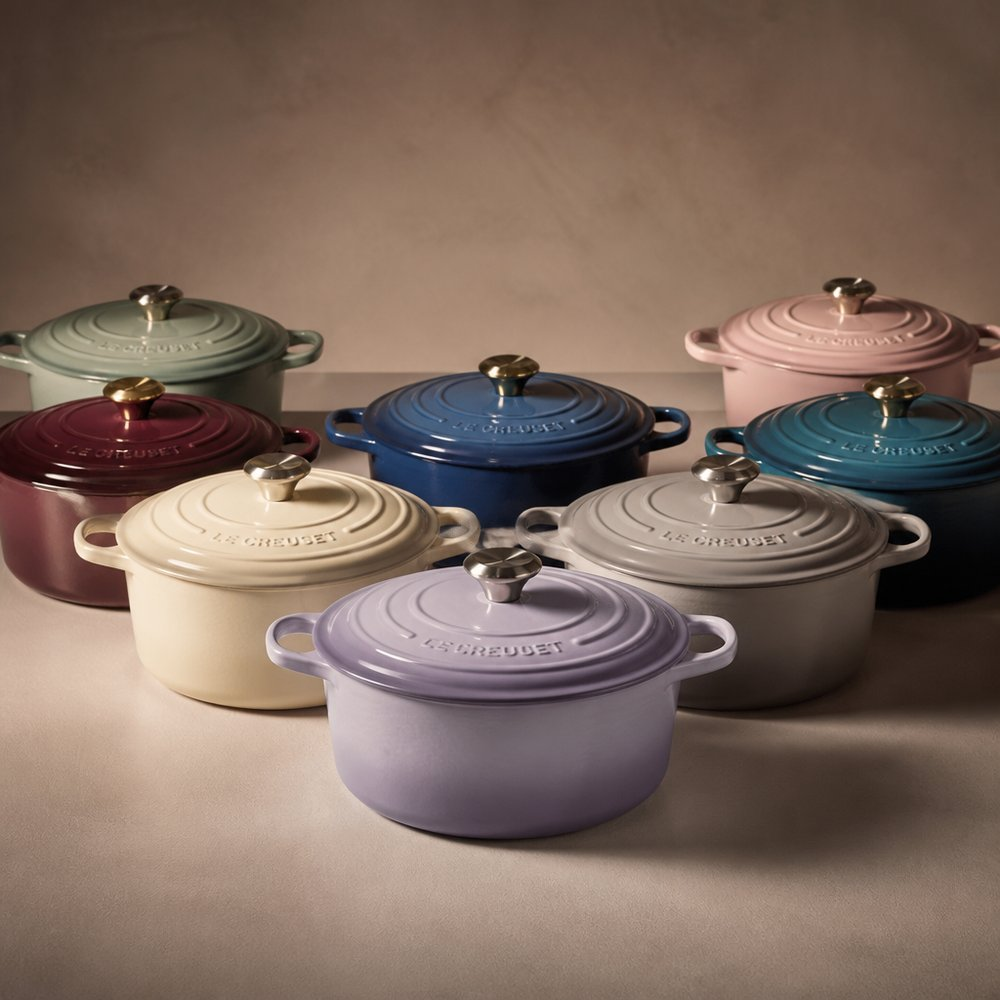
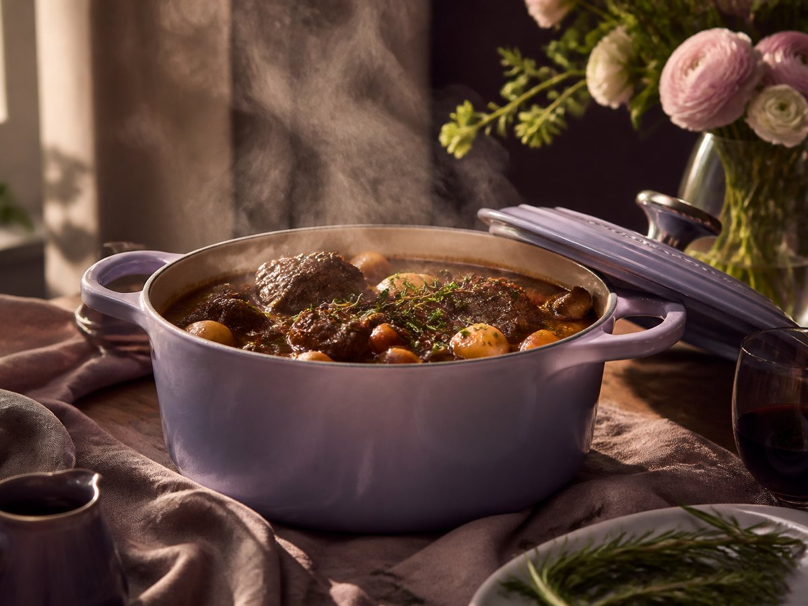
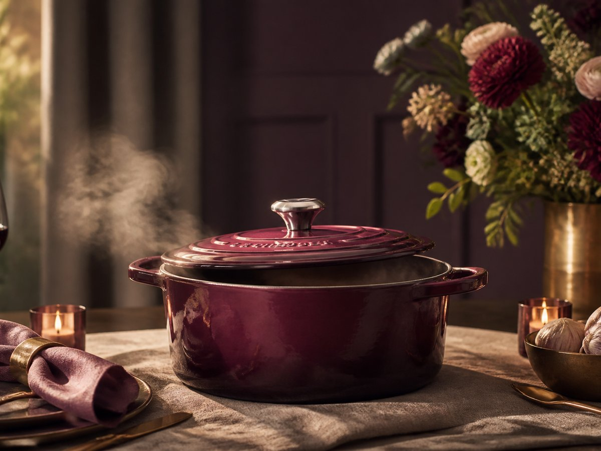

Le Creuset Signature
Francouzská litina, která z pomalého vaření dělá rituál.
Le Creuset Signature je ikona pro kuchaře, kteří chtějí víc než jen nádobí. Nabízí smaltovanou litinu se špičkovým vedením a udržením tepla, ikonickou zaoblenou siluetu a jistotu, že si domů berete kus na celý život. Za 9 490 Kč získáte hrnec, který promění dušení, pečení i servírování v jeden plynulý, krásný proces.

Promyšlený do posledního detailu

Světlý smaltovaný vnitřek pro snadnou kontrolu vaření vám dovolí vidět barvu, redukci i texturu bez dohadů. Široká oušková madla zase usnadní manipulaci při přenášení z plotny do trouby i na stůl. Je to drobný komfort, který se při každém použití mění ve skutečný rozdíl.
Světlý smaltovaný vnitřek
pro snadnou kontrolu vaření
Široká oušková madla
při přenášení z plotny do trouby i na stůl
Skutečný rozdíl
při každém použití
Každý kus nese podpis řemesla
Za ikonickou formou stojí skutečné řemeslo: individuálně vyráběno francouzskými řemeslníky. Každý kus prochází pečlivým zpracováním, aby byl stejně spolehlivý v kuchyni jako krásný při servírování. Tady nejde o trend — jde o tradici, která má váhu, příběh a dlouhou životnost.
- individuálně vyráběno
- francouzskými řemeslníky
- dlouhou životnost

Teplo, které pracuje za vás
Smaltovaná litina se špičkovým vedením a udržením tepla rozvádí energii rovnoměrně a drží stabilní podmínky i při delším vaření. Hrnec je odolný v troubě až do 260 °C včetně knoflíku, takže můžete bez kompromisů přejít ze sporáku do trouby a dál vařit přesně podle receptu.

Vyberte si barvu i velikost
Přes 20 barevných variant vám dovolí sladit hrnec s kuchyní, jídelnou i osobním stylem — od jemných tónů po výrazné sběratelské odstíny. A velikosti od 0,95 do 13 litrů pokryjí vše od malých všedních večeří až po velké rodinné pečení. Jeden tvar, mnoho možností, stejná ikonická kvalita.

Přes 20 barevných variant
0,95 do 13 litrů
Jeden tvar, mnoho možností, stejná ikonická kvalita.Od prvního cibulového základu po nedělní pečeni
Tenhle hrnec je doma tam, kde se vaří pomalu a s chutí. Skvěle se hodí na ragú, vývar, pečené maso, chleba i zeleninu, protože drží teplo, tvoří jemné bublání a dává surovinám čas rozvinout chuť. Výsledek? Jídlo, které působí slavnostně, i když vzniklo z úplně obyčejného dne.
Jídlo, které působí slavnostně, i když vzniklo z úplně obyčejného dne.

Vstupte do kuchyně, která vydrží generace
Le Creuset Signature je volba pro ty, kteří chtějí francouzskou litinu, smalt, krásu i výkon v jednom. Pokud hledáte hrnec, který bude sloužit dnes, zítra i za mnoho let, teď je ten správný čas vybrat si svou variantu a začít vařit s kusem, který obstojí na celý život.
